✔ Nagekeken okt. 2026
Welke wapens werden er rond Ieper gebruikt, hoeveel, en wat deden ze? Elk cijfer komt uit de bron die erbij staat; ⚠️ betekent dat bronnen verschillen of dat het om een schatting gaat. De balken tonen verhoudingen per grafiek.
🛡️ Tanks
Mark IV (Brits, 1917)
De Mark IV kwam in mei 1917 in dienst en werd de meest gebouwde tank van de oorlog. Er waren twee gevechtsversies: de ‘Male’ met twee 6-ponderkanonnen (57 mm) en machinegeweren, en de ‘Female’ met alleen machinegeweren. Daarnaast waren er ongewapende bevoorradingstanks. ℹ️ Meer info ↗
- Bemanning
- 8 (commandant, bestuurder, twee ‘gearsmen’ voor de versnellingen en vier schutters)
- Gewicht
- Male 28,4 t · Female 27,4 t
- Bewapening
- Male: 2 × 6-ponder (57 mm) + 3 Lewis-mitrailleurs · Female: 5 Lewis-mitrailleurs
- Pantser
- 12 mm
- Motor
- Daimler, 16 liter, 105 pk
- Snelheid
- max. ± 6,4 km/u (wandeltempo)
- Bereik
- ± 56 km
Gebouwde aantallen: 1.220 Mark IV’s tegenover 20 Duitse A7V’s. ⚠️ Het Tank Museum noemt elders 1.222.
Binnen was het heet, lawaaierig en vol uitlaatgassen; er was geen vering. Ongeveer 40 buitgemaakte Mark IV’s werden door de Duitsers zelf ingezet (‘Beutepanzer’).
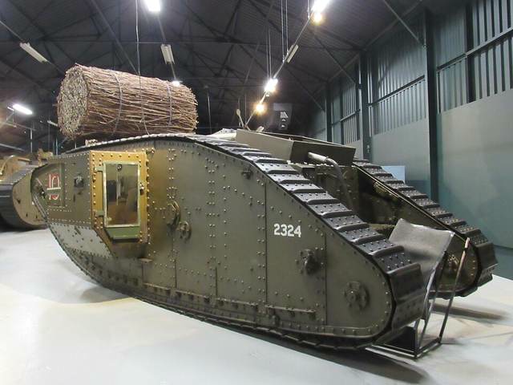
Tanks in de Ieperboog, 1917
Bij de Slag om Mesen (7 juni 1917) stonden 72 nieuwe Mark IV’s klaar. Voor de eerste dag van de Derde Slag om Ieper (31 juli 1917) plande generaal Gough 120 Mark IV’s, met nog 48 in reserve. ℹ️ Meer info ↗
Ingezette Mark IV-tanks volgens Wikipedia (op basis van de Britse officiële geschiedenis).
Waarom bleven ze steken? Het artilleriebeschot vernielde het afwateringssysteem van de lage, kleiige grond; met de zware regen van augustus werd het slagveld een moeras. Op 27 augustus 1917 liepen de tanks van een gecombineerde aanval vast en mislukte de aanval. De beste tankresultaten in de Ieperboog kwamen op 19 augustus bij Sint-Juliaan, op en langs de weg naar Poelkapelle. Een tank van 28 ton met 105 pk en zonder vering zakte gewoon weg in de modder.
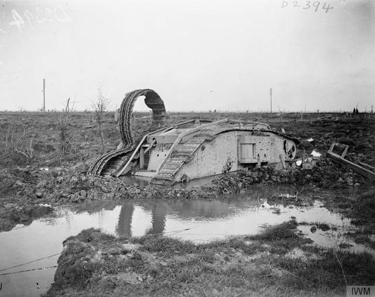
Duitse A7V
Duitsland bouwde er slechts 20. Een bemanning van minstens 18 man (17 soldaten en een officier) en een 57 mm-kanon. In april 1918 schakelde een Britse Mark IV Male een A7V uit: het eerste gevecht tussen twee tanks. ℹ️ Meer info ↗
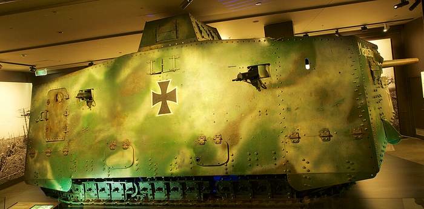
🚜 De tank bij Pondfarm (Langemark) is een replica, gebouwd door de Poelcapelle 1917 Association; op de boerderij zijn ook originele tankstukken te zien.
💥 Artillerie
Het artilleriebeschot vormde het landschap: de kraters, de modder en de ‘ijzeren oogst’ van vandaag komen grotendeels van granaten. Veldkanonnen schoten vrij vlak over korte afstand; houwitsers (‘howitzers’) schoten hoog en vielen steil neer, ideaal tegen loopgraven en bunkers. Voor een grote aanval kwam er dagenlang ‘voorbereidend beschot’ en tijdens de aanval een ‘rollend vuur’ (creeping barrage) vlak voor de infanterie uit.
Granaten van het Britse voorbereidend beschot. ⚠️ Voor juli 1917 noemen bronnen 4,25 (IWM) tot 4,3–4,5 miljoen.
Britse kanonnen en houwitsers bij het voorbereidend beschot. ⚠️ Een bron noemt precies 3.091 voor juli 1917.
Het beschot van juli 1917 was volgens het IWM het zwaarste en langst volgehouden van de oorlog. Toch waren op 31 juli in de Duitse eerste linie alleen al nog 64 bunkers met machinegeweren actief. ℹ️ Meer info ↗
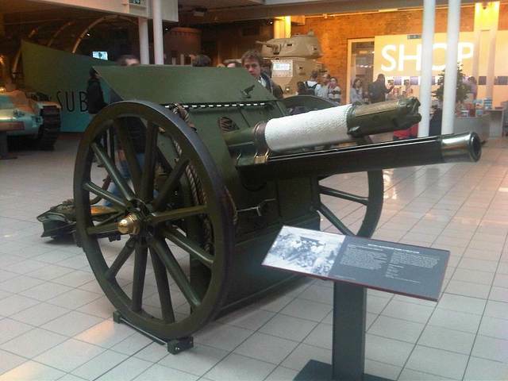
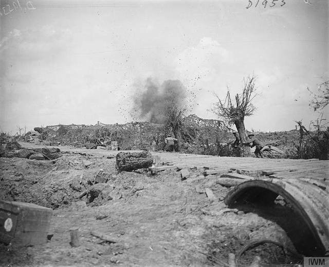
🔫 Machinegeweren
Machinegeweren met waterkoeling konden urenlang doorvuren en maakten aanvallen over open terrein dodelijk. In de Ieperboog stonden de Duitse mitrailleurs vaak in betonnen bunkers (pillboxen).
- Vickers (Brits)
- .303 (7,7 mm), waterkoeling, bediend door 3 man; 450–600 schoten per minuut; men rekende op 10.000 schoten per uur, met elk uur een nieuwe loop. ℹ️ Meer info ↗
- MG 08 (Duits)
- 7,92 mm, gordels van 250 patronen, ± 3,7 liter koelwater; gemiddeld ± 500 schoten per minuut (600 met de latere Schloss 16). ℹ️ Meer info ↗
- Lewis (Brits, licht)
- Pannenmagazijn tot 96 patronen; ook de wapens in de Mark IV. ℹ️ Meer info ↗
Schoten per minuut: machinegeweer tegenover een getrainde schutter met een Lee-Enfield.
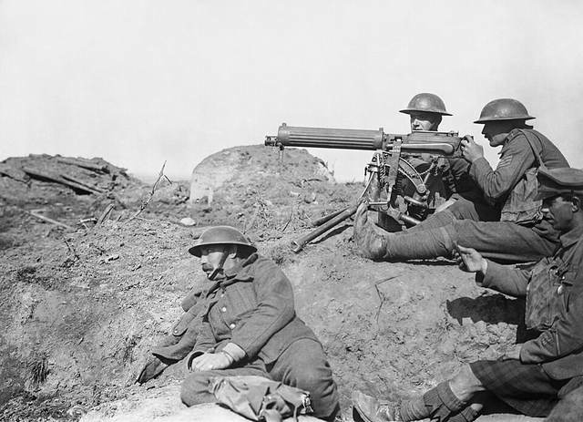
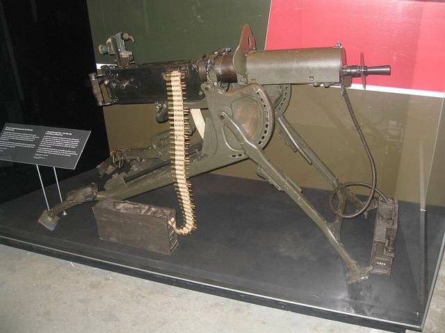
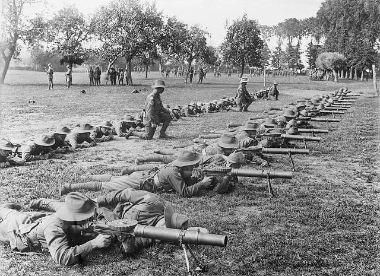
🎯 Geweren
- Lee-Enfield (Brits)
- .303, grendelgeweer met een magazijn van 10 patronen. Een goed getrainde schutter haalde in de ‘mad minute’ 20 tot 30 gerichte schoten per minuut. ℹ️ Meer info ↗
- Gewehr 98 ‘Mauser’ (Duits)
- 7,92 mm, laadstrip van 5 patronen. In 1914 had het Duitse leger 2.273.080 Mauser 98-geweren; tijdens de oorlog kwamen er ± 7 miljoen bij. ℹ️ Meer info ↗
Duitse Mauser 98-geweren.
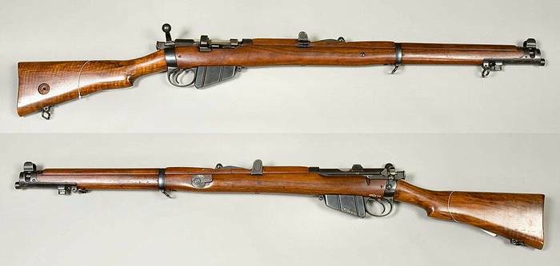
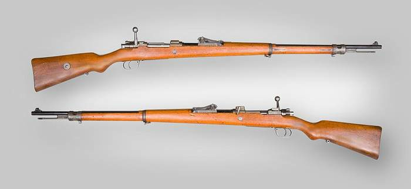
🧨 Granaten & mortieren
- Mills bomb (Brits)
- De ‘ananas’-granaat met een vertraging van 4 seconden. Van de eerste versie, de No. 5 (1915), werden tot 1917 33.168.367 stuks gemaakt. ℹ️ Meer info ↗
- Stielhandgranate (Duits)
- De ‘steelgranaat’ met houten steel. ℹ️ Meer info ↗
- Stokes-mortier (Brits)
- 81 mm (‘3 inch’), tot 25 granaten per minuut, bereik tot ± 730 m. Een mortier schoot steil omhoog, recht in de vijandelijke loopgraaf. ℹ️ Meer info ↗
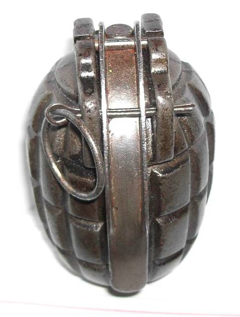
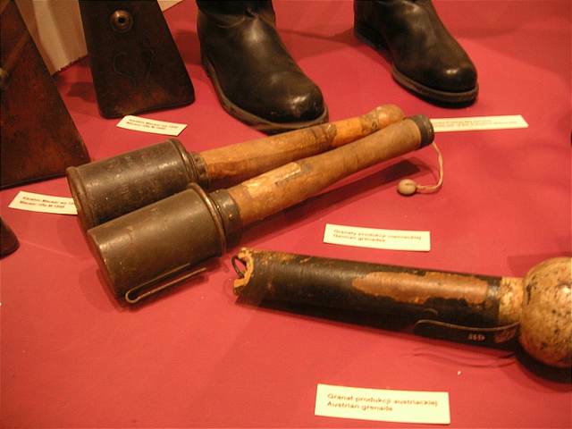
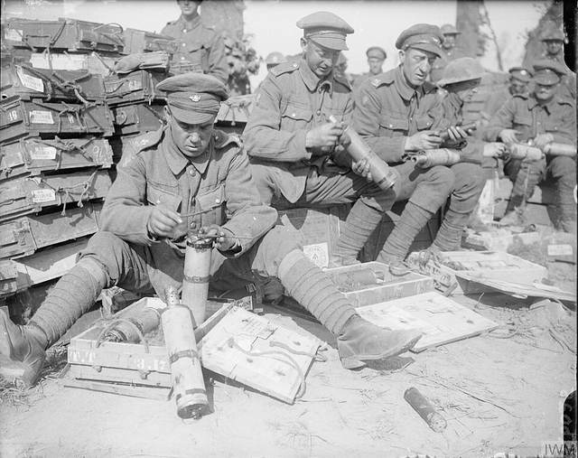
☠️ Gas
Ieper is wereldwijd verbonden met gifgas: hier begon de grootschalige gasoorlog, en mosterdgas heet in het Frans en Nederlands nog altijd yperiet.
- Chloor · 22 april 1915
- Bij Langemark-Poelkapelle liet het Duitse leger 167 ton chloor ontsnappen uit 5.730 gasflessen. Een grijsgroene wolk dreef naar de Franse en Algerijnse linies (Tweede Slag om Ieper). ℹ️ Meer info ↗
- Fosgeen · 19 december 1915
- Eerste Duitse aanval met een mengsel van chloor en fosgeen, bij Wieltje (Ieper): 88 ton uit flessen, 1.069 slachtoffers, van wie 69 doden. Fosgeen was kleurloos en rook naar muf hooi, dus moeilijk te merken. ℹ️ Meer info ↗
- Mosterdgas · 12 juli 1917
- Eerste gebruik, door Duitsland bij Ieper, weken vóór de Derde Slag om Ieper. Geen echt gas maar een olieachtige vloeistof die brandwonden en blaren maakt; de Duitse granaten waren geel gemarkeerd. Daarom ‘yperiet’. ℹ️ Meer info ↗
Hoeveelheid gas bij twee aanvallen uit flessen rond Ieper.
Over de hele oorlog schatten historici ± 1,3 miljoen gasslachtoffers en tot ± 90.000 doden: zo’n 3–3,5% van alle slachtoffers. Gasmaskers waren een doeltreffend tegenwapen. ℹ️ Meer info ↗
💣 Gasgranaten liggen nog altijd in de grond. DOVO in Poelkapelle had begin 2026 nog 1.609 toxische projectielen in voorraad. Zie Gevaar & munitie.
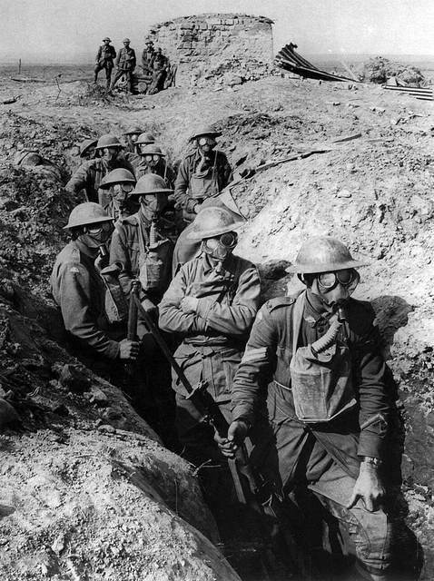
⛏️ Mijnen
Britse, Canadese, Australische en Nieuw-Zeelandse tunnelbouwers groeven diepe gangen onder de Duitse linies op de Mesenrug. Ze legden 26 mijnen met samen ± 454 ton ammonal; op 7 juni 1917 om 3:10 ontploften er 19 binnen ongeveer 20 seconden. De knal zou tot in Londen en Dublin gehoord zijn ⚠️ (berichten, niet gemeten).
Mijnen van Mesen. Eén Birdcage-mijn ontplofte in 1955 door blikseminslag.
De grootste, onder Spanbroekmolen, bevatte 41.277 kg ammonal op 27 m diepte; de krater is nu de ‘Pool of Peace’. Het oude cijfer van ‘10.000 Duitse doden’ is volgens historicus Simon Jones veel te hoog ⚠️. ℹ️ Meer info ↗
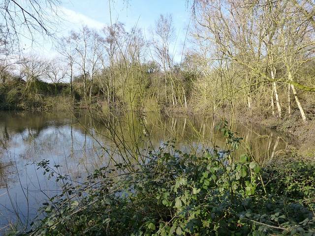
✈️ Vliegtuigen
Vliegtuigen fotografeerden de loopgraven (de WOI-luchtfoto’s op de loopgravenkaart komen daarvan), leidden het artillerievuur en vochten luchtgevechten. Bij Mesen in 1917 steunden ze de aanval rechtstreeks. De Franse piloot Georges Guynemer (53 luchtoverwinningen volgens de gemeente) verdween op 11 september 1917 boven Poelkapelle. ℹ️ Meer info ↗
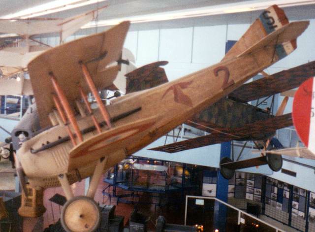
👀 Waar zie je dit in het echt?
- Tank: replica Mark IV met originele tankstukken bij Pondfarm, Langemark (alleen op afspraak).
- Bodemvondsten (granaten, geweren, helmen): collectie op Varlet Farm; In Flanders Fields Museum in Ieper.
- Mijnenoorlog: luisterschachten in Bayernwald; kraters bij The Bluff; Hill 60 en Caterpillar-krater.
- Gas: Canadees monument Sint-Juliaan en de Duitse begraafplaats Langemark, in het gebied van de aanval van 22 april 1915.
- Bunkers voor mitrailleurs en staf: commandobunker Zandvoorde.
- Kustartillerie: geschutbeddingen en afstandsmeter van Batterij Aachen in Raversyde.
- Luchtoorlog: Guynemer-monument, Poelkapelle.
💣 Zie je in het veld iets dat op munitie lijkt: niet aanraken, afstand houden, bel 101.